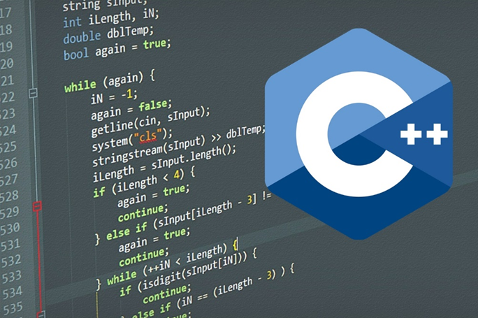
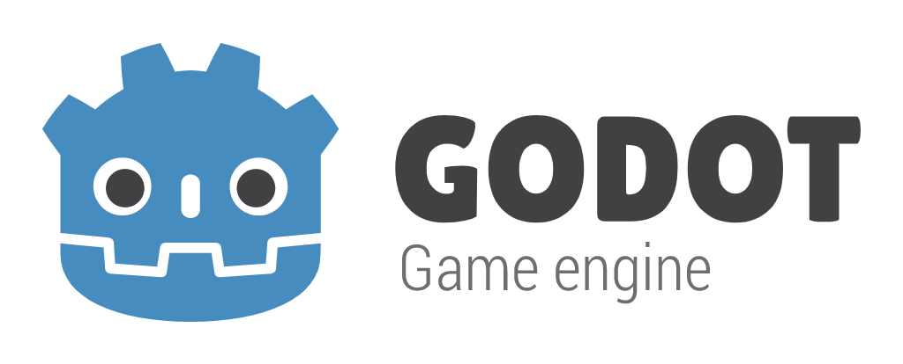

Lenguajes y Plataformas
Lenguajes Comunes en el Desarrollo de Videojuegos
C++
C++ es uno de los lenguajes más utilizados en la industria de los videojuegos. Es conocido por su rendimiento y control sobre los recursos del sistema.
C#
C# es el lenguaje principal utilizado en Unity, uno de los motores de juegos más populares. Es fácil de aprender y permite crear juegos en 2D y 3D.

JavaScript
JavaScript se utiliza principalmente en el desarrollo de juegos web. Con bibliotecas como Phaser, los desarrolladores pueden crear juegos interactivos.

Python
Python es conocido por su simplicidad y legibilidad. Se utiliza a menudo para prototipos y scripting en el desarrollo de juegos.
Java
Java es popular para el desarrollo de juegos móviles, especialmente en la plataforma Android. Su portabilidad lo hace ideal para aplicaciones.

Plataformas de Desarrollo de Videojuegos
Unity
Un motor de juegos multiplataforma que permite el desarrollo en 2D y 3D. Es conocido por su facilidad de uso.

Unreal Engine
Un motor de juegos potente utilizado para crear gráficos de alta calidad. Es popular en la industria de los juegos AAA.
Godot
Un motor de juegos de código abierto que es fácil de aprender y utilizar, ideal para desarrolladores independientes.
GameMaker Studio
Una plataforma que permite a los desarrolladores crear juegos 2D sin necesidad de conocimientos avanzados de programación.